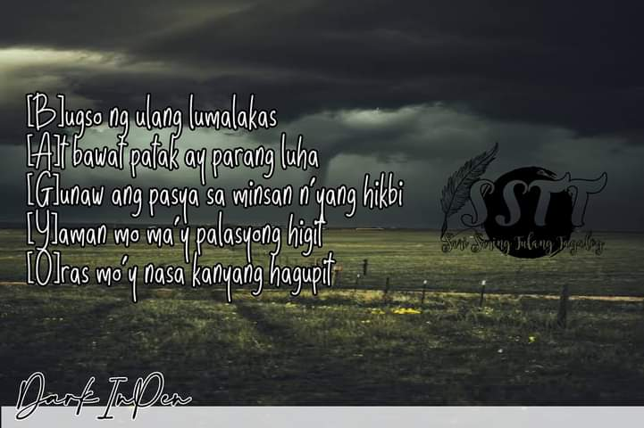
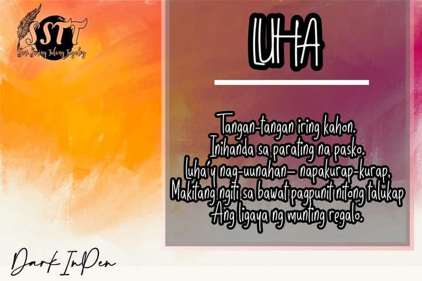
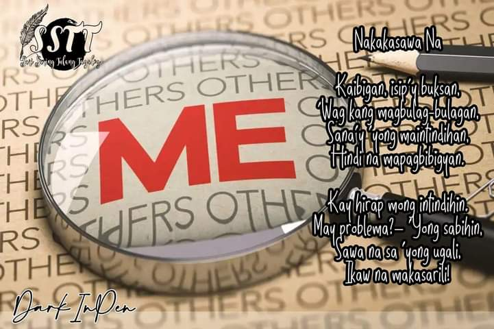
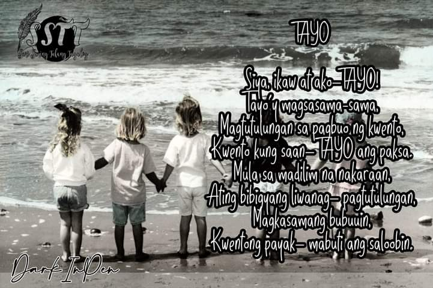
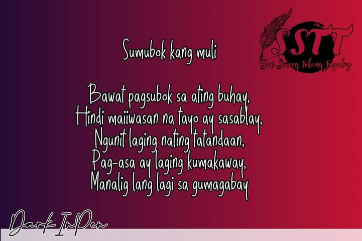
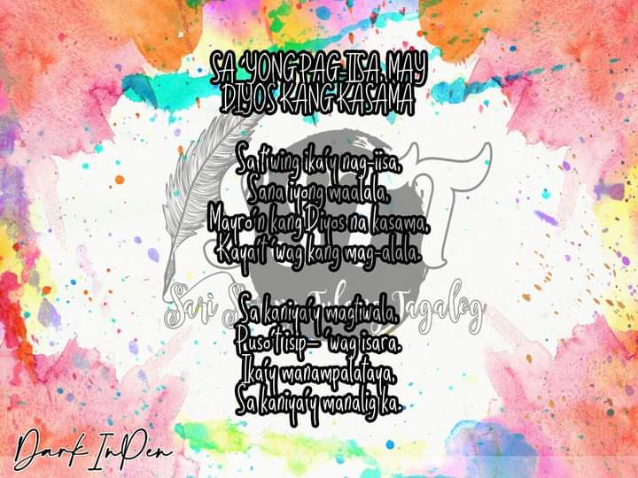

These are some of my poetries:






HANGGANG SA MULI
Sa ilalim ng buwan, madilim na kapaligiran at huni ng mga ibon ang naririnig,
Ako’y narito’t nag-iisa habang iniisip kung bakit at paano tayo humantong sa ganitong sitwasyon.
Akin na naman bang iisipin na wala talaga akong kaibigan sa mundong ito?
Iisipin na naman bang hindi ako nararapat sa isang grupo ng magkakaibigan?
Masakit ngunit anong magagawa?
Talaga namang sa una’t umpisa lang masaya.
Mahirap tanggapin ngunit wala ng magagawa,
‘Pagkat kayo na mismo ang nagtulak sa ‘kin upang koneksiyon natin ay tuluyang putulin na.
Mga alaalang nabuo’y hindi malilimutan,
Mga tawanan, iyakan at biruan ay hindi mawawala sa ‘king puso’t isipan.
Mga lokohan na kahit may naiinis na’y wala pa ring tigil,
Mga kasiyahang nabuo mula sa mga panahong lahat ay nanggigigil.
Hindi ako mangungulit sapagkat tapos ng mangulit,
Hindi na ako makikipag-usap sapagkat tapos na akong makipag-usap,
Hindi na muling lalapit sapagkat takot ng layuang muli,
Hindi na muling kakapit sapagkat kayo’y matagal ng bumitaw.
Mga nasaksihang paghihirap ng bawat isa,
Mga nasaksihang paghihinagpis ng bawat isa,
Mga nasaksihang problema ng bawat isa,
Mga nasaksihang napagtagumpayan ng bawat isa’y mananatiling sikreto’t hindi mailalabas.
Patuloy na rerespetuhin kahit na nakatalikod,
Patuloy na magiging suportado sa mga bawat tatatahakin niyo,
Patuloy na aalalay kahit na hindi makita’t madama,
Patuloy na magiging kaibigan niyo sa madilim na kapaligiran.